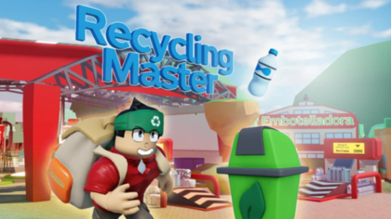

El Ayuntamiento ha adoptado energías renovables como parte de su compromiso con la sostenibilidad. Se han instalado paneles solares en edificios municipales y aerogeneradores en diversas zonas de la ciudad para aprovechar la energía eólica. Estas medidas ayudan a reducir la dependencia de fuentes de energía no renovables y promueven la producción local de energía limpia.

Se han creado múltiples puntos de reciclaje en la ciudad para fomentar el reciclaje de residuos como papel, vidrio, plástico y metales. Estos puntos están ubicados en lugares estratégicos y son accesibles para todos los ciudadanos. Con esta medida, el Ayuntamiento busca reducir la cantidad de desechos que terminan en vertederos y promover una cultura de reciclaje.
El Ayuntamiento ha implementado programas educativos en colegios para sensibilizar a los estudiantes sobre la importancia del cuidado del medio ambiente. Estos programas incluyen actividades, talleres y visitas a centros de reciclaje y plantas de energía renovable. La educación ambiental es clave para formar una nueva generación consciente de su impacto en el planeta.
Para reducir la contaminación del aire y el tráfico en la ciudad, el Ayuntamiento ha promovido el uso del transporte público y las bicicletas. Se han mejorado las infraestructuras para bicicletas, creando carriles exclusivos y estaciones de alquiler en puntos clave. Además, se han ampliado las rutas de autobuses y trenes urbanos, asegurando un transporte público eficiente y accesible para todos los ciudadanos.
El Ayuntamiento ha implementado estrictas regulaciones para controlar las emisiones de gases contaminantes en la ciudad. Se han establecido límites de emisión para vehículos y fábricas, y se están realizando inspecciones periódicas para asegurar el cumplimiento de estas normativas. Estas regulaciones son fundamentales para mejorar la calidad del aire y reducir el impacto ambiental de las actividades urbanas.